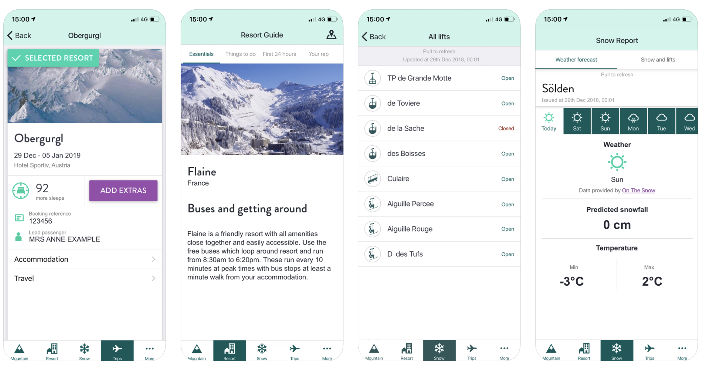
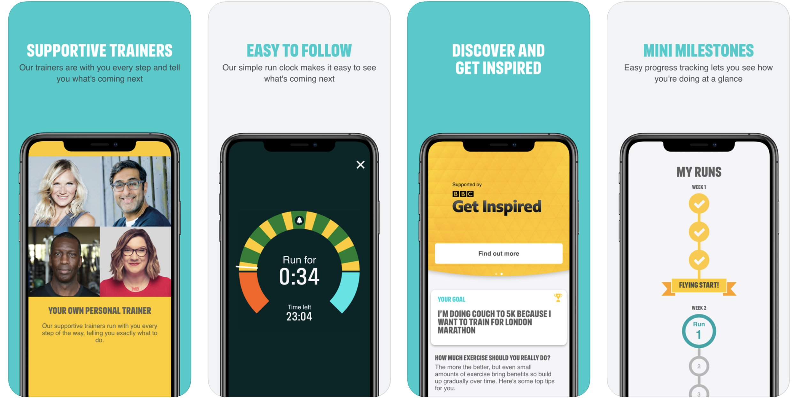
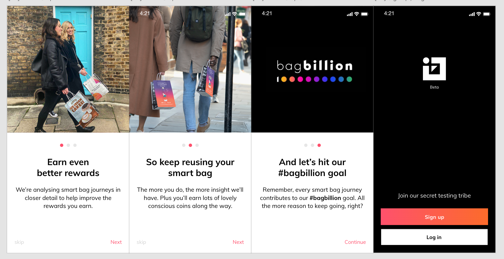

Crystal Ski App
About the project
• Worked in team of 5 people, Agile environment and daily standups
• Worked with a highly modularized and strictly implemented Clean architecture in Swift
• Swift 3 used exclusively
• Used Bitrise for Continuous Integration
• Used JIRA for task management and sprint planning
• Used Zeplin for design and asset management
• Used BitBucket for version control and code reviewing
• Mentored other junior developers to solve complex code problems
• Implemented new features, like boarding passes, meet the team and transfers in Crystal Ski app
• Migrated from Swift 3 to Swift 5 in Crystal Ski app
• Deep linking using HTTP URL to TUI booking system in Crystal Ski app
• Provided release builds to be published to the Apple app store
Couch25K App
About the project
• Worked in team of 5 people, Agile environment and daily standups
• Worked with a highly modularized and strictly implemented Clean architecture in Swift
• Swift 5 used exclusively
• Used Bitrise for Continuous Integration
• Used JIRA for task management and sprint planning
• Used Zeplin for design and asset management
• Used BitBucket for version control and code reviewing
• Mentored other junior developers to solve complex code problems
• Provided release builds to be published to the Apple app store
• Implemented visual and voice accessibility features in Couch to 5K app
• Implemented new onboarding flow and redesigned several parts of the Couch to 5K app
Bagboard App
About the project
The project was created by using Agile team of 8 people and daily SCRUM stand ups
Worked with a highly modularised and strictly implemented Clean architecture MVP/MVVM
Swift 5 used exclusively
Used Bitrise for Continuous Integration and CD
Used JIRA for task management and sprint planning
Used GitHub for version control and code reviewing
Implemented new design and features swipe left/right full screen, GPS Location and QR camera scanning.
Provided release builds with TestFlight published to Apple app store.
MyMusic App
About the project
• Worked in team of 5 people, Agile environment and daily standups
• Worked with a highly modularized and strictly implemented Clean architecture in Swift
• Swift 5 used exclusively
• Used Bitrise for Continuous Integration
• Used JIRA for task management and sprint planning
• Used Zeplin for design and asset management
• Used GitHub for version control and code reviewing
iOS 12, CoreData, XCTest, UIKit, WebKit, Alamofire, Autolayout, ProgressHUD
Project code is visible at GitHub .
GitHub Search App
About the project
• Worked in team of 5 people, Agile environment and daily standups
• Worked with a highly modularized and strictly implemented Clean architecture in Swift
• Swift 5 used exclusively
• Used JIRA for task management and sprint planning
• Used Zeplin for design and asset management
• Used GitHub for version control and code reviewing
iOS 12, CoreData, XCTest, UIKit, WebKit, URLSession, Autolayout, ProgressHUD
Project code is visible at GitHub .